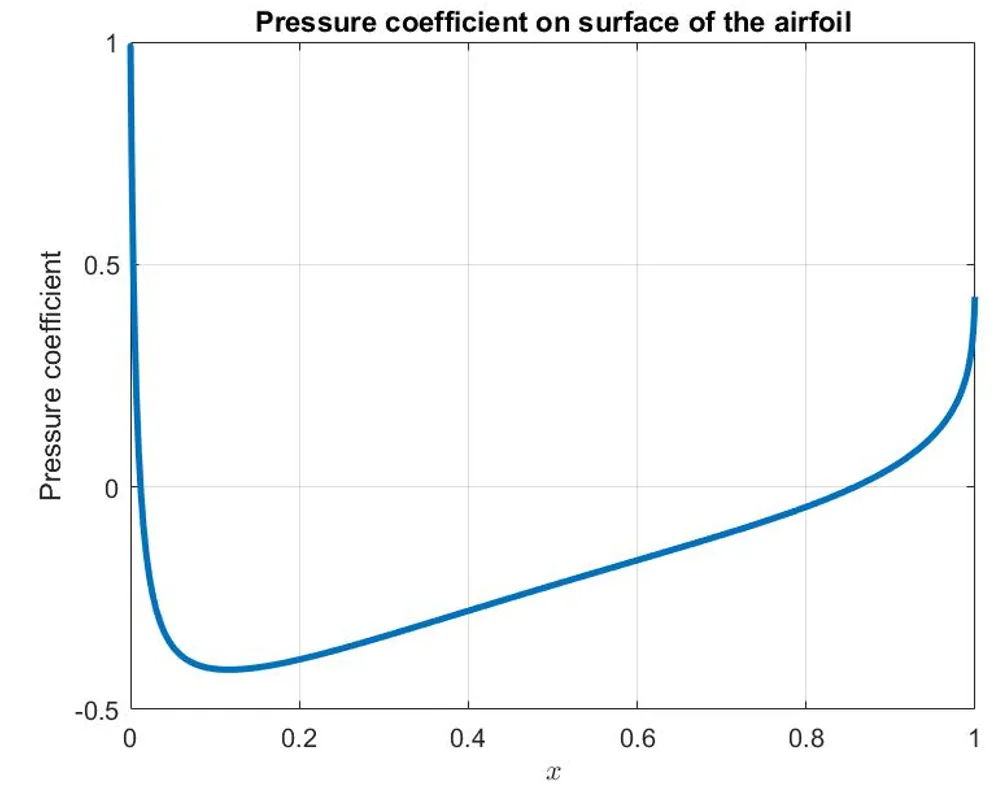

Computational Aerodynamics & Numerical Methods · Fluid Track
Finite-Volume Numerical Analysis of Incompressible and Subsonic Compressible Potential Flow over a NACA 0012 Airfoil
Gas Dynamics · University of Tehran
View Full Report (PDF)Download PDF
Project Overview
A computational project on the solution of potential flow around a NACA 0012 profile, including numerical mesh construction, iterative finite-volume solution and studies of subsonic compressibility.
Engineering tools and methods: MATLAB; FVM, TFI, elliptic grid generation, SOR.
Methodology
Modeling and formulation
Generated body-fitted meshes using transfinite interpolation and elliptic smoothing.
Numerical implementation
Discretized the potential-flow equation by the finite volume method.
Analysis and comparison
Applied the successive over-relaxation method and monitored solution convergence.
Interpretation and reporting
Investigated pressure coefficient distributions, grid effects and compressibility assumptions.
Selected Findings and Scope
| Item | Reported result or scope |
|---|---|
| Grid levels | 61×31, 121×61 and 241×121. |
| Reported accuracy order | Approximately 1.8707 in the numerical accuracy study. |
| Relaxation parameter | SOR factor of 1.7. |
| Scope limitation | The report contains inconsistent critical-Mach statements; no verified critical-Mach value is asserted here. |
The findings above reproduce values and limits stated in the submitted project report. They are reported numerical or design outputs unless explicitly noted otherwise; the full PDF should be consulted for model assumptions and details.
Figures from the Report


Complete Course Project Report
The full 84-page report includes the original technical formulation, calculations, figures, results and the references provided with the submitted course project.
Open Full Report (PDF)Download PDF
The public project copy has text-searchable student registration numbers removed where present; scientific content has not been rewritten.